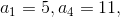
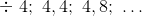
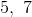
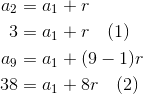

Exerciții rezolvate cu progresii aritmetice
În această pagină, profesorii noștri experimentați ți-au pregătit câteva exerciții rezolvate complet. Aceste exerciții se rezolvă folosind proprietățile progresiei aritmetice prezentate anterior.
Să se determine elementul cerut în fiecare dintre cazurile următoare:
Se dau Să se calculeze
Fie Să se calculeze
Se cunosc Să se afle rația
Știind termenii  să se afle rația
 și termenul
și termenul
Soluție:
- Folosind Propoziția P3, din pagina anterioră, se obține:

- Din Propoziția P3, din pagina anterioră, avem:
- Confrom Propoziției P3, din pagina anterioră, succesiv, obținem că:
- Folosim Propoziția P3, din pagina anterioră și obținem:
Având rația, putem afla termenul indicat:
- Să se afle termenii ai următoarelor progresii aritmetice:
-

-
Soluție:
- Folosind formula termenului general, obținem:
Scădem din relaţia  prima relaţie, adică pe
prima relaţie, adică pe  , obţinând că:
, obţinând că:
Așadar, primii trei termeni ai progresiei date sunt
- Analog subpunctului anterior, avem că:
Scădem din pe și avem:
Am obținut că primii trei termeni ai progresiei date sunt
Să se scrie următorii doi termeni ai unei progresii aritmetice, dacă se cunosc următoarele:
Soluție:
- Folosind formula termenului general, obținem:

Avem progresia aritmetică  .
- Analog subpunctului a., avem că:

Am obținut progresia aritmetică
Să se scrie termenii de rang  și
 ai unei progresii aritmetice, dacă se cunosc primul termin și rația
ai unei progresii aritmetice, dacă se cunosc primul termin și rația
Soluție:
Din Propoziția P3: ( Termenul general al unei progresii aritmetice ), obținem că:
Așadar, termenii ceruți sunt
Să se scrie suma primilor
 de termeni ai progresii aritmetice în cazurile următoare:
de termeni ai progresii aritmetice în cazurile următoare:
Soluție:
- Folosind Propoziția P3 și Propoziția P6, avem:
- Folosim aceleași proprietăți ca la subpunctul anterior.
Avem relația .
Scriem al treilea termen în funcție de primul termen:
Atunci:
Având primul termen și cunoscând și rația, putem afla pe :
Acum putem calcula suma primilor de termeni ai progresiei:
Așadar,
Să se scrie termenul general
 al unei progresii aritmetice ştiind termenii şi
al unei progresii aritmetice ştiind termenii şi
Soluție:
Cunoscând cei doi termeni, aflăm rația și primul termen:

Din relaţia scădem relaţia și obţinem:
Având rația, aflăm primul termen:
Având rația și primul termen, putem afla formula termenului general, folosind Proprietatea P3 :